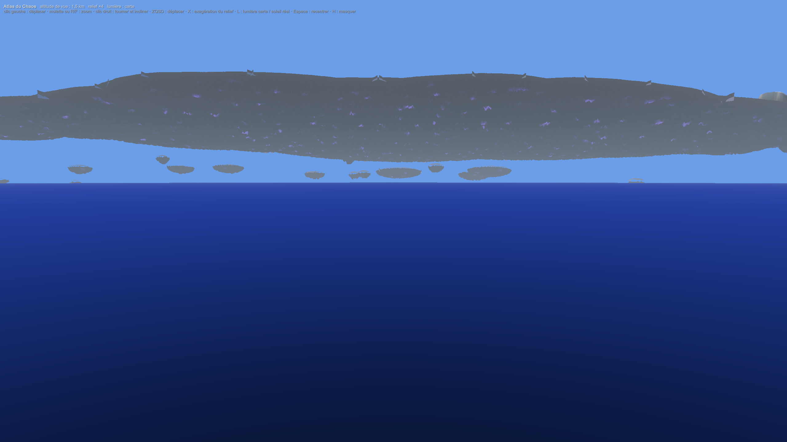
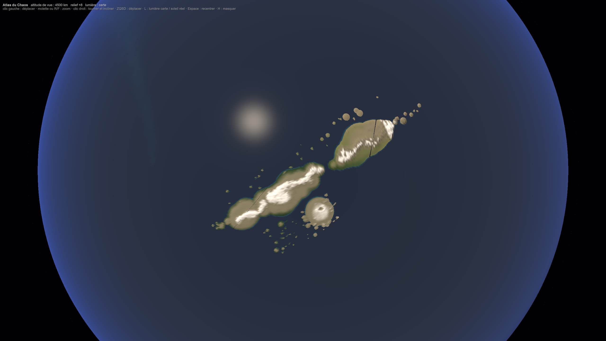
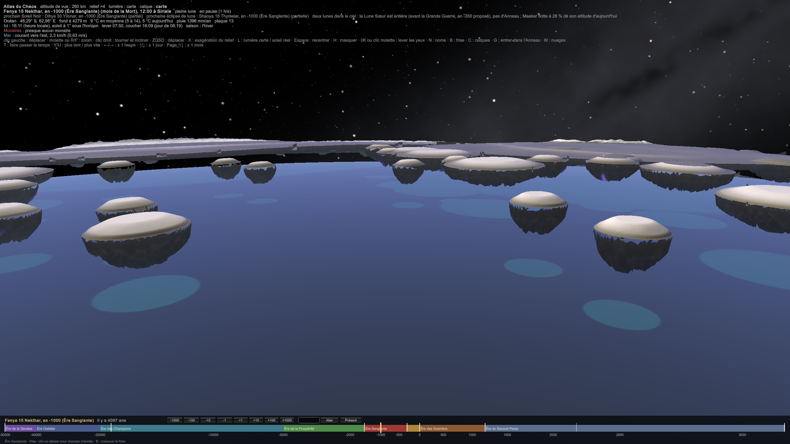
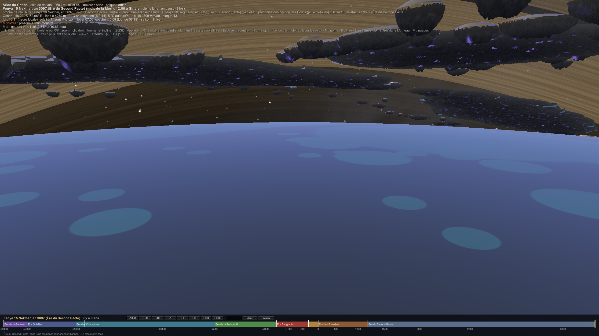

PLA-009 — Maakar, l'archipel flottant
Maakar est un archipel flottant de la taille d'un continent.
- Tout le continent flotte, très haut dans le ciel, au-dessus du premier ciel : on lève les yeux loin dans le ciel pour le voir.
- Il est fréquemment frappé par des météorites, à cause de sa proximité avec le ciel et du champ qui le maintient en place.
- Ses habitants se sont adaptés à ce milieu difficile : leur technologie est bâtie sur la survie.
- On ne peut pas y aller en bateau : il faut voler.
 
1. La forme
- Un arc d'≈ 3 300 km, sur 1,0 M km² (PLA-008 Disposition du monde), soit 2,6 fois le Japon. Il est posé dans la bande de pluie de l'Anneau, vers 35–45°S (PLA-007 Climats régionaux).
- Trois grandes îles :
- Andralith (ouest) ;
- l'île centrale, avec les Alpes de Maakar et les Grandes Plaines ;
- Korrun (nord-est), avec les Monts Cristallins.
- Le reste : des chaînes d'îlots aux deux bouts, Luth-Kael (une île ronde autour de son cratère) et, au sud, les éclats de la Mer des Brisures.
- L'archipel flotte à 19–30 km d'altitude : la base de sa roche est à 23 km sous Korrun, 27 km sous l'île centrale, 30 km sous Luth-Kael. Les éclats de la Mer des Brisures descendent vers 19 km. Le dessous est une masse rocheuse de 1 à 3 km d'épaisseur, en pointes, veinée de cristaux de Chaos qui luisent.
2. Les deux ciels
| Altitude | Température | Pression |
|---|---|---|
| 0 km | 15 °C | 100 % |
| 5,5 km | −21 °C | 50 % |
| 11 km (fin des nuages et de la météo) | −56 °C | 22 % |
| 20 km | −56 °C | 5 % |
| 25 km | −51 °C | 2,5 % |
Toute la météo (nuages, pluie, orages) se passe sous ≈ 11 km. C'est le premier ciel (la troposphère). Au-dessus, l'air est glacé, presque vide, et toujours clair.
- Le premier ciel : celui de tout le monde, avec ses nuages et sa pluie. Maakar est au-dessus.
- La Zone morte, entre ≈ 11 et 20 km : un air à −56 °C, cinq à vingt fois moins dense qu'au sol. Un humain y meurt en quelques minutes.
- Le second ciel : le champ qui retient la roche de Maakar retient aussi l'air chargé de Chaos par les poussières de météorites, comme il retient les îles. Maakar flotte donc dans sa propre bulle d'air, une lentille d'atmosphère posée au-dessus de la Zone morte. C'est là que se trouvent ses climats, ses orages, ses lacs et ses champs.
- Les Nyamakalas vivent dans un air de haut plateau (de l'ordre de 2 000 à 3 000 m sur Terre) et y sont adaptés.
Le sang des Tibétains s'est adapté à l'altitude (gène EPAS1).
Pourquoi on ne peut pas y monter à la corde :
- La corde casse sous son propre poids. Une corde de chanvre tient au plus ≈ 4 km, un câble d'acier forgé ≈ 5 km. Il en faudrait 25.
- La Zone morte tue. Même avec une corde parfaite, il faudrait grimper 15 km dans un air irrespirable à −56 °C.
- Le dessous surplombe. C'est un plafond de roche en pointes, pas une falaise.
Ce qu'on voit depuis la mer : Maakar est visible à ≈ 570 km. De loin, c'est une longue bande sombre, posée au-dessus de l'horizon et bleuie par la distance. À 100 km, elle est à 14° au-dessus de l'horizon ; dessous, c'est un plafond qui couvre la moitié du ciel, scintillant de cristaux.
Les grosses météorites ne s'écrasent pas toujours au sol : freinées par l'air, elles explosent en vol, vers 20 à 40 km. Celle de Tcheliabinsk (Russie, 2013) a explosé à ≈ 30 km, et son souffle a brisé des vitres à 100 km à la ronde. Maakar flotte exactement dans la couche où explosent les météorites. C'est la vraie raison de son climat de catastrophe.
3. Comment il tient : « l'aimant cassé »
Le principe (PHY-002 Le Chaos et les forces) : une roche saturée de Chaos orienté contre la gravité perd son poids, et la maintenir en l'air ne coûte rien.
L'histoire géologique :
- Au début, Maakar est un arc volcanique ordinaire, posé sur la mer. La fuite du sceau céleste charge peu à peu sa roche de Chaos. Il n'y a pas encore de pluie d'anneau : elle commence vers −350.
- La roche se sature. Couche après couche, le Chaos du sceau oriente la roche de l'arc.
- L'arc se casse en deux, à l'horizontale. La moitié haute, saturée, devient presque sans poids et s'arrache : c'est l'archipel. La moitié basse reste au fond de la mer : c'est la Racine, un plateau sous-marin qui a exactement la forme de l'arc, vers 700 m de profondeur.
- Avant −350, l'archipel flotte vers 5 à 9 km. Depuis −350, la pluie d'anneau charge encore sa roche : en ≈ 300 ans, il monte à 19–30 km (la Montée, § 14).
Si l'on casse un aimant, on obtient deux aimants. Retournés face à face par le même pôle, ils se repoussent. On peut faire léviter de façon stable un matériau repoussé par un champ : c'est la lévitation diamagnétique. À Nimègue, en 1997, une grenouille a lévité dans un champ de 16 teslas. L'objet se loge dans le « creux » du champ et y reste, en hauteur comme sur les côtés.
Ce qui en découle :
- Deux forces se partagent le poids. La saturation de la roche en porte la plus grande partie (de l'ordre de 95 à 99 %). La Racine repousse l'archipel pour le reste, et cette poussée faiblit avec la distance.
- L'altitude est stable. Si l'archipel descend, la Racine le repousse plus fort ; s'il monte, elle le lâche. Il flotte donc à une hauteur d'équilibre, plus haut là où la roche est plus saturée.
- Il ne dérive pas. Il est piégé au-dessus de sa Racine, comme la grenouille dans son champ : c'est le champ qui le maintient en place.
- Les éclats, eux, dérivent. Les morceaux qui dépassent de l'empreinte de la Racine ne sont plus tenus, ce qui explique la Mer des Brisures et ses « îles suicidaires ».
- L'ordre de grandeur. Monter 1 M km² de roche épaisse d'environ 1 km jusqu'à 1,7 km d'altitude représente ≈ 5 × 10²² J ; jusqu'à 19–30 km, ≈ 15 fois plus, ≈ 7 × 10²³ J. La charge s'est faite sur des millénaires par la fuite du sceau (PLA-004 Géologie du monde), puis la pluie d'anneau l'a fait monter en ≈ 300 ans depuis −350.
- La durée de vie de l'orientation (τ) est de l'ordre de 10 000 ans.
4. Pourquoi les météorites tombent sur Maakar
Le champ magnétique de la Terre canalise les particules du vent solaire vers les pôles : c'est ce qui fait les aurores boréales.
Le champ de Chaos de Maakar fait la même chose avec les débris de l'Anneau. Il attire et canalise les fragments chargés de Chaos qui passent au-dessus de la bande de pluie. Maakar reçoit donc bien plus de météorites que toute autre terre à la même latitude, par exemple les steppes de Khodom dans la bande nord. Ces débris viennent de la Lune Sœur brisée, faite à ≈ 75 % de glace, et les pluies suivent les conjonctions des Éclats (PLA-010 L'Anneau, la Lune Sœur et les Éclats).
- Le spectacle : des aurores permanentes au-dessus de Maakar.
- La boucle : chaque pluie recharge la roche en Chaos. Ce qui menace Maakar est aussi ce qui le maintient en l'air. Sans les météorites, Maakar s'enfoncerait lentement.
5. Pourquoi le champ attire les météorites, mais repousse Maakar
Les chiffres sont dans SIM-16 Maakar flottant.
Deux aimants tenus pôle contre pôle identique se repoussent. Mais une aiguille de boussole libre près d'un aimant tourne toujours pour s'aligner, puis elle est attirée. C'est pour la même raison que la limaille de fer saute sur un aimant, quel que soit le sens où on la présente.
- Maakar est un aimant tenu. Son Chaos est figé dans la roche, et il ne peut pas pivoter : la Racine le repousse, et il flotte.
- Une pierre de l'Anneau est une aiguille libre. Elle tourne sur elle-même en tombant, son Chaos s'aligne sur le champ, et elle est attirée vers Maakar.
C'est le même champ, avec deux effets opposés : il porte le continent et il lui attire ses météorites.
6. Le tri des météorites
Le champ attire une pierre d'autant mieux qu'elle porte de Chaos. Or l'hydrogène, le carbone et l'oxygène retiennent le Chaos, et le fer pas du tout (CHI-004 Les métaux et le Chaos). Le champ fait donc le tri :
| Ce qui tombe sur Maakar | Où ça éclate | Ce que ça devient |
|---|---|---|
| La glace (88 % des chutes) | ≈ 56 km, au-dessus du second ciel | Une neige d'étoiles fine, l'eau de Maakar : les « Rosées-Stellaires » |
| Les pierres carbonées (7 %) | ≈ 36 km, juste au-dessus | Une poussière noire riche en carbone, en eau et en acides aminés : les sols fertiles des météorites |
| Les pierres ordinaires (5 %) | ≈ 26 km, à l'altitude de Maakar | Les catastrophes : des explosions au plafond du second ciel, au-dessus des villes |
| Le fer | Presque jamais | Il n'est pas attiré et tombe ailleurs dans la bande : l'acier divin des steppes de Khodom |
7. Le fer, poison de Maakar
Le rare bloc de fer qui frappe Maakar par hasard désoriente le Chaos de la roche autour de lui (CHI-004 Les métaux et le Chaos).
- Les effets : autour du fer se forme une zone morte, qui perd sa portance. La roche se fend, et le morceau finit par se détacher et tomber. C'est une origine de la Mer des Brisures.
- Les chasseurs de fer : des équipes nyamakalas traquent chaque impact de fer et l'extraient avant que l'île ne se fende. Ce fer est vendu à Kemazo et à Sera.
- Une culture sans fer : pas d'outils ni d'armures en fer, et un tabou. Les Nyamakalas ont développé ce que les autres n'ont pas : l'aluminium (le mithril, tiré par la foudre de leurs orages, CHI-005 Le mithril (aluminium)), la céramique, le carbone et le verre.
- Une faiblesse militaire : leurs ennemis le savent. Une pluie de fer jetée d'un navire volant au-dessus de Maakar serait une arme terrible. C'est une raison de plus pour garder le monopole du vol.
8. Pourquoi on ne peut pas y aller en bateau
- On ne peut pas l'aborder. Le dessous de l'archipel est un plafond de roche, à 19–30 km au-dessus de la mer, et la Zone morte le sépare du premier ciel. Il n'y a ni falaise à escalader ni corde assez longue (§ 2).
- La mer sous l'archipel est un piège. C'est une mer d'ombre, qui reçoit en permanence des pierres, des éclats de météorites et des cascades tombant des îles (la Grande Chute d'Andralith). Aucun marin ne s'y aventure.
- Le vol vient des pierres flottantes. Les Pierres-Lévites sont des pierres flottantes extraites des fonds insulaires. Une pierre taillée sous l'archipel garde sa saturation, donc presque plus de poids. Un navire qui en porte devient quasi léger, et une voile ou une hélice suffit à le faire voler.
- Les Nyamakalas ont le monopole du vol. Loin de Maakar, les pierres se déchargent lentement et doivent revenir s'y recharger. Le vol est leur grand levier diplomatique avec Sera et Khodom.
9. Le climat du second ciel
Dans sa bulle d'air, Maakar a un climat de haut plateau, et non celui de l'air libre à 25 km (−50 °C).
- Korrun, plus au nord, est le grenier tempéré de l'archipel.
- Les Alpes de l'île centrale sont enneigées.
- La Mer des Brisures (49°S) est froide et battue par les tempêtes : ses éclats, sortis de la bulle d'air, descendent dans la Zone morte.
- Les orages permanents : chaque météorite qui explose dans la bulle y dépose énormément d'énergie.
10. Une terre de catastrophes
Le Japon subit séismes, typhons et tsunamis. Ses volcans sont destructeurs, mais ses sols volcaniques sont fertiles. Il a développé une architecture parasismique et des systèmes d'alerte, et son insularité lui a donné une culture à part.
| Maakar | |
|---|---|
| Le fléau | Des pluies de météorites, plusieurs fois par mois |
| Le don | Des minerais uniques, et la recharge qui maintient Maakar en l'air |
| La réponse | Boucliers, forteresses célestes, une science obsédée par la prévision |
| L'isolement | Aérien : on n'y entre que si l'on vous y fait voler |
11. Les avantages de la malédiction
- Rester en l'air. Chaque pluie recharge la roche. Sans elles, Maakar perdrait environ 2 km par siècle et toucherait la mer en ≈ 9 000 ans (SIM-16 Maakar flottant).
- L'eau. La glace de l'Anneau, réduite en neige, renouvelle les lacs. La Grande Chute d'Andralith est le trop-plein de cette eau venue des étoiles, qui retourne à la mer.
- La fertilité. La poussière carbonée apporte du carbone, de l'azote, du phosphore et des acides aminés. Les champs de Korrun sont fertilisés par le ciel.
- L'énergie. Les impacts forment des cristaux chargés de Chaos, de véritables piles (CHI-002 Le Chaos dans la matière). La poussière électrisée nourrit des orages permanents : de l'électricité, donc de l'aluminium.
- Les métaux rares. Les impacts concentrent les métaux du groupe du platine, et les zones de Chaos forgent des éléments lourds (CHI-002 Le Chaos dans la matière).
> [!science] La couche d'iridium
> L'impact qui a tué les dinosaures, il y a 66 millions d'années, a laissé partout sur Terre une fine couche riche en iridium, un métal rare dans la croûte mais abondant dans les météorites (Alvarez, 1980). - L'imprenable. La Zone morte et l'absence de bateaux en font une forteresse naturelle. Aucune armée n'y monte sans navires volants.
- La science. Les pluies suivent les conjonctions des Éclats, tous les 12,2 jours (PLA-007 Climats régionaux) : les prédire, c'est survivre. D'où une civilisation d'astronomes, d'archivistes et d'ingénieurs.
- La magie d'endurance. L'air de la bulle est riche en Chaos. Selon la loi de l'énergie (PHY-000 Définition physique du Chaos §3), les mages s'y rechargent sans peine, mais chaque sort y frappe moins fort. Leur style : des sorts longs, des machines et des piles, plutôt que de grands coups.
- Le commerce. Le monopole des pierres de vol, la vente du fer extrait, les cristaux, l'aluminium.
12. Le prix
- Les explosions : environ 30 détonations d'un mètre par an, une ville touchée tous les 17 ans environ, une région ravagée par siècle (SIM-16 Maakar flottant §5). Les boucliers et les forteresses célestes répondent à ça.
- Les séismes de Maakar : après un gros impact, tout le continent oscille, avec une période d'environ 18 minutes.
- Les monstres : chaque impact charge le sol en Chaos, ce qui crée des territoires monstrueux (SIM-05 Transport du Chaos) et des Bêtes-comètes. Luth-Kael, le plus bombardé, est le plus monstrueux.
- La dépendance : des années de pluies faibles font descendre Maakar. La peur d'une « année sèche » est une angoisse de civilisation.
- L'isolement : on vit sans fer, sans mer et loin de tout.
13. La Grande Chute, les îles qui dérivent et Narak
La Grande Chute d'Andralith, la « chute infinie ».
Une chute d'eau se brise en gouttes, puis en brume, au bout de quelques centaines de mètres. Au Salto Angel (Venezuela, 979 m, la plus haute du monde), l'eau n'atteint plus le pied de la falaise en saison sèche : elle arrive en bruine. Plus haut, l'air froid fait geler les gouttes.
- Andralith est entre 19 et 30 km d'altitude, dans un air à environ −50 °C hors de la bulle. L'eau quitte l'île, se brise, puis gèle en cristaux qui tombent lentement (1 à 9 m/s) : il leur faut des heures pour descendre, et une bonne part se sublime en route. Vue de partout, c'est une colonne d'argent qui se change en un long voile blanc sans jamais toucher l'océan : une chute sans fin. Sous Andralith, il neige en permanence sur l'océan.
- D'où vient l'eau : de la glace des météorites, qui forme 88 % de ce qui tombe sur Maakar (SIM-16 Maakar flottant). Andralith la recueille et la fait fondre ; la chute est éternelle tant que la pluie d'anneau dure.
- L'énergie hydro-technique se prend dans les premières centaines de mètres de chute, avant que l'eau ne se disperse.
Des îles qui « dérivent ». La Racine porte Maakar à la verticale avec un équilibre stable (SIM-16 Maakar flottant), mais elle ne le retient presque pas de côté. Les vents d'altitude (à ces latitudes, des vents d'ouest qui dépassent souvent 100 km/h) poussent les îles, et le champ de la Racine les ramène lentement : elles dérivent sans jamais partir, de quelques kilomètres par jour autour de leur place. Les îlots de la Mer des Brisures, petits et moins saturés de Chaos, dérivent beaucoup plus.
Narak, « au-dessus de l'océan », et ses submersibles. Narak est la cité la plus à l'ouest, au bord de l'archipel, à 19 km de la mer. Elle descend ses submersibles au bout de câbles jusqu'à l'océan. Un câble d'acier casse sous son propre poids au-delà d'environ 25 km ; une fibre moderne comme l'aramide, au-delà de 200 km. Maakar, qui sait bâtir un ascenseur orbital, sait bâtir un ascenseur vers la mer. Narak est donc le seul port de Maakar qui touche l'océan.
Des îles qui « s'effondrent dans l'océan ». Une île qui perd son Chaos orienté descend lentement, puis tombe (SIM-16 Maakar flottant).
14. La Montée
L'Anneau naît pendant la Grande Guerre divine, dans l'Ère Sanglante, quand la Lune Sœur se rompt. Avant, il n'y a pas de pluie d'anneau.
- Avant la guerre, Maakar ne se nourrit que de la fuite du sceau céleste. Avec une roche chargée à s ≈ 0,7 à 0,8, il flotte vers 5 à 9 km (SIM-16 Maakar flottant), soit 28 % de son altitude d'aujourd'hui : au niveau des plus hautes montagnes, sous le premier ciel. On le voit, et l'on peut presque l'atteindre depuis les sommets.
- Après la guerre, les pluies d'anneau chargent sa roche (s ≈ 0,97). Il monte à 19–30 km en 300 ans, en suivant une courbe en S, et se coupe du monde : la bulle d'air, la Zone morte, l'accès uniquement par les airs.
- Pour les Nyamakalas, la Montée est l'événement de leur histoire : leur monde s'est élevé hors de portée, et il a fallu inventer les machines pour redescendre. C'est pourquoi leur grande technique est récente à l'échelle du monde (BIO-007 Les Nyamakalas).
 